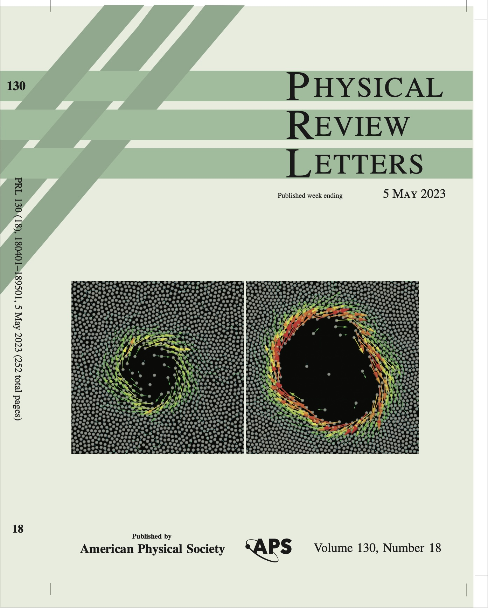

Zaiyi Shen (沈在意), PH.D.
 Assistant Professor
Assistant Professor
Department of Mechanics and Engineering Science
Peking University
Email: zaiyi.shen@pku.edu.cn
Short bio: I received my Ph.D. degree in life science physics in the Laboratoire Interdisciplinaire de Physique (LiPhy), Université Grenoble Alpes, and then continued my research in the Laboratoire Ondes et Matière d’Aquitaine (LOMA) as a postdoctoral fellow. I joined the College of Engineering, Peking University in early 2023. I am fascinated by the dynamics of fluids within living systems. We conduct numerical experiments to delve into the collective motion of active particles induced by flow. Our current research is centered on examining how flow inertia influences the formation of emergent patterns.
Research interests: Intermediate Reynolds number flow, Complex Fluids, Blood Flow, Collective Motion, Colloidal Assembly, Biological Locomotion
Positions for students and postdocs are available. We're seeking enthusiastic new additions to our team. If you are interested in working with us, please email me.
Research
-
PRL cover
 Our new paper is selected a cover of PRL.
-
PRL cover
Our new paper is selected a cover of PRL.
-
PRL cover
Our new paper is selected a cover of PRL.
-
PRL cover
Our new paper is selected a cover of PRL.
Publications
17. Hydrodynamic clustering and emergent phase separation of spherical spinners
Z. Shen, J. S. Lintuvuori
Physical Review Research 2 (1), 013358 (2020)
16. Migration of a red blood cell in a permeable microvessel
Z. Shen, Y. He
Medicine in Novel Technology and Devices, 100023 (2019)
15. Gravity induced formation of spinners and polar order of spherical microswimmers on a surface
Z. Shen, J. S. Lintuvuori
Physical Review Fluids 4, 123101 (2019) (Editors’ Suggestion)
14. Shear Stress in the Microvasculature: Influence of Red Blood Cell Morphology and Endothelial Wall Undulation
B. Hogan, Z. Shen, H. Zhang, C. Misbah, A. I. Barakat
Biomechanics and Modeling in Mechanobiology 18, 1095-1109 (2019)
13. Computational Analysis of Nitric Oxide Biotransport in a Microvessel Influenced by Red Blood Cells
Y. Wei, L. Mu, Y. Tang, Z. Shen, Y. He
Microvascular Research 125, 103878 (2019)
12. Hydrodynamic self-assembly of active colloids: chiral spinners and dynamic crystals
Z. Shen, A. Würger, J. S. Lintuvuori
Soft Matter 15, 1508-1521 (2019)
11. ATP Release by Red Blood Cells under Flow: Model and Simulations
H. Zhang, Z. Shen, B. Hogan, A. I. Barakat, C. Misbah
Biophysical Journal 115 (11), 2218-2229 (2018) (News of the INP CNRS)
10. Optimal cell transport in straight channels and networks
A. Farutin, Z. Shen, G. Prado, V. Audemar, H. Ez-Zahraouy, A. Benyoussef, B. Polack, J. Harting, P. M. Vlahovska, T. Podgorski, G. Coupier, C. Misbah
Physical Review Fluids 3 (10), 103603 (2018)
9. Hydrodynamic interaction of a self-propelling particlre with a wall: Comparison between an active Janus particle and a squirmer model
Z. Shen, A. Würger, J. S. Lintuvuori
The European Physical Journal E 41, 39 (2018)
8. Blood crystal: emergent order of red blood cells under wall-confined shear flow
Z. Shen, T. M. Fischer, A. Farutin, P. M. Vlahovska, J. Harting, C. Misbah
Physical Review Letters 120 (26), 268102 (2018) (MIT Technology Review: The Best of the Physics arXiv (week ending December 2, 2017), physics.org news, xinhuanet.com news)
7. Interaction and rheology of vesicle suspensions in confined shear flow
Z. Shen, A. Farutin, M. Thiébaud, C. Misbah
Physical Review Fluids 2 (10), 103101 (2017)
6. Inversion of hematocrit partition at microfluidic bifurcations
Z. Shen, G. Coupier, B. Kaoui, B. Polack, J. Harting, C. Misbah, T. Podgorski
Microvascular Research 105, 40-46 (2016) (The most cited articles published since 2016)
5. Numerical simulation for the motion of deformable particles in the deterministic lateral displacement device using IB-LBM
J. Wei, H. Song, Z. Shen, Y. He, X. Xu, B. Li
Chinese Journal of Hydrodynamics 6, 604-611 (2015)
4. Numerical Study of Pillar Shapes in Deterministic Lateral Displacement Microfluidic Arrays for Spherical Particle Separation
J. Wei, H. Song, Z. Shen, Y. He, X. Xu, Y. Zhang, B. Li
NanoBioscience, IEEE Transactions on 14(6), 660-667 (2015)
3. Prediction of Anomalous Blood Viscosity in Confined Shear Flow
M. Thiébaud, Z. Shen, J. Harting, C. Misbah
Physical Review Letters 112 (23), 238304 (2014)
2. A Lattice Boltzmann Method for Simulating the Separation of Red Blood Cells at Microvascular Bifurcations
Z. Shen, Y. He
Chinese Physics Letters 29 (2), 024703 (2012)
1. Mathematical Modeling of Glomerular Capillary Network and Renal Control System
Z. Shen, Y. He, R. Hu
SPACE MEDICINE & MEDICAL ENGINEERING 24(3) (2011)